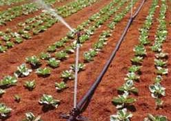

DEPARTMENT INTRODUCTION
VISION/ MISSION STATEMENT
Conservation and Management of Soil and Water resources in Collaboration with Stakeholders for Sustainable Development.
OBJECTIVES
- Implement various programmes of Government related to conservation and management of Soil and Water resources of the State.
- To enhance productivity with the available resources without adversely affecting natural resources in terms of ground water, soil health and environment.
- Promoting efficient use of irrigation water and on-farm management of water resources.
- To maximise returns to farmers in agriculture and allied sectors.
- Ensuring longevity of existing water resources of the State.
ORGANIZATION SET-UP
The Department of Soil and Water Conservation was established as a independent department in the year 1969, Earlier it was a wing of Agriculture Department. The Department of Soil and Water Conservation, Punjab is headed by Chief Conservator of Soils, Punjab and has it’s Headquarters at Chandigarh. There are total 5 posts in the rank of Conservator of Soils with 1 post in the rank of Conservator of Soils (HQ) at Chandigarh and 1 post of Conservator of Soils designated as Director Technical (State Land Use Board). Also, 3 posts of Conservator of Soils are in the field and they control territorial circles in their jurisdiction. Under the Conservator of Soils, there are 3 or 4 officers in the rank of Divisional Soil Conservation Officers. Each Divisional Soil Conservation Officer controls 3 or 4 Sub-Divisional Soil Conservation Officers. Apart from it, there is one Soil Survey Division, one Machinery Division and one Training Institute each headed by a Divisional Soil Conservation Officer.
INFRASTRUCTURE
The department has its own complex at phase-VI, Mohali spread over 10 Acres which includes Training Institute, Auditorium with seating capacity of 500 persons, Conference Room, Rest House, Hostels for Trainees, Soil Testing Laboratory, Beautiful Lush Green Lawns and orchards with demonstration of Drip Irrigation System, Machinery House, Canteens besides housing Offices of Director State Land Use Board, Conservator of Soils Mohali, Soil Survey Division, Machinery Division, Training Institute and Divisional Soil Conservation Officer-Works Division and also residential quarters for class-IV employees. The department has its own computer lab with all facilities like internet, office networking and dedicated employees at headquarters Chandigarh
The department has a sanctioned staff strength of 2220 employees, out of which 1500 employees are in the technical cadre and 720 employees are in the administerial cadre. The head office has a sanctioned strength of 80 employees in the ministerial cadre/Technical Cadre. The technical staff like Soil Conservation Officers, Junior Engineers, Surveyors, Agriculture Sub-Inspectors, Draftsmen and Junior Draftsmen are posted in the field offices to carry out soil and water conservation works. Apart from territorial divisions, there are three divisions who carry out works through out the state. The Divisional Soil Conservation Officer (Machinery) maintains a fleet of machinery in the department and Divisional Soil Conservation Officer (Training Institute) heads a Departmental Training Centre. Soil Survey Division carries out of Soil Survey work throughout the state. The department also has a nucleus cell of State Land Use Board headed by Director (Technical) in the rank of Conservator of Soils.The Department is facing a major staff shortage as total strength of Department is about 800 which is about 35% of total sanctioned strength. The strength is technical cadre is more dismal as only about 25% of total sanctioned strength of technical cadre is in service now.
MAJOR ACTIVITIES OF DEPARTMENT
Underground Pipeline System (UGPS)
Replacement of open irrigation channels with underground pipeline system for conveyance. It helps save about 30% water. Farmers can opt for RCC, PVC or HDPE pipes
Laying of underground pipeline saves water upto extent of 30%, which is also corroborated by evaluation studies carried out by ICAR and NABARD. Saving of irrigation water to this extent means that this amount of water withdrawal from ground shall be reduced. Besides the water conservation, additional advantages for farming community is reduced labour and maintenance costs. This intervention also saves about 2-3% of land, wasted on account of construction of open channels which can be put under agricultural use.
Type of Assistance Provided:
- Capital assistance @90% on Community UGPS projects mainly in canal command areas under RKVY, PIDB, RIDF-17, RIDF-21 and Sangrur-Barnala schemes.
- Subsidy @50% on Individual UGPS projects in tubewell commands areas under Crop Diversification Programme
Micro Irrigation(MI) - Drip and Sprinkler Irrigation systems
Ascientific method of irrigation carrying desired water and nutrients direct to the root zone of the plant, drop by drop. It is a technique in which water flows through a filter into special drip pipes, with emitters located at different spacing. Water is distributed through the emitters directly into the soil near the roots through a special slow-release device. If the drip irrigation system is properly designed, installed, and managed, drip irrigation may help achieve water conservation by reducing evaporation and deep drainage. Compared to other types of irrigation systems such as flood or overhead sprinklers, water can be more precisely applied to the plant roots. In addition, drip can eliminate many diseases that are spread through irrigation water. Drip irrigation is adaptable to any farmable slope and is suitable for most soils.
Advantages
- High water application efficiency and lower labour costs.
- Minimised fertiliser/nutrient loss due to localised application and reduced leaching.
- Ability to irrigate irregular shaped fields. Levelling of the field not necessary.
- Allows safe use of recycled (waste) water.
- Moisture within the root zone can be maintained at field capacity and minimised soil erosion.
- Soil type plays less important role in frequency of irrigation.
- Highly uniform distribution of water i.e., controlled by output of each nozzle.
- Usually operated at lower pressure than other types of pressurised irrigation, reducing energy costs.
Assistance provided:
- Subsidy @80% to farmers: (CSS PMKSY: 35% RIDF-20: 45%).
- Addl. 10% subsidy to Small/Marginal/SC/Women Farmers.
- Priority tubewell connection for farmer opting for micro irrigation system
Laying of Underground Pipeline for Irrigation using Treated Water from Sewerage Treatment Plants
The Project aims to provide treated water from these sewerage treatment plants for irrigation through network of underground pipelines. The availability of irrigation water from this source will not only reduce stress on other water resources especially the ground water, which is declining at tremendous rate in the State. The state of Punjab has taken a major initiative under the programme “Cleaning of Rivers” for treatment of municipal waste water by installation of Sewerage Treatment Plants across all major cities, towns besides for cluster of villages wherein underground sewerage facility is available. This programme is flagship programme of State Govt and is personally monitored by Hon’ble Chief Minister, Punjab. The Punjab Water Supply and Sewerage Board along with Punjab Urban Development Agency have already installed Sewerage Treatment Plants for treatment of municipal waste water for all major cities and towns of the State. The construction of STP’s for other townships and cluster of villages are currently underway. Till date approx 45 nos of STP’s are functioning and almost 60 nos of STP’s are nearing completion along with 70 nos of STP’s are in course of planning and execution stage. This mean that abundant amount of treated water is available for utilization in agriculture.
Major Advantages
- Reduced stress on ground water aquifers, which inturn are replenished and the declining trend of water levels is arrested.
- More potable water availability as use of treated water for irrigation purposes reduces use of potable water in agriculture.
- Environmental pollution is mitigated as untreated water will not be released into the environment.
- Farmers dependence on other sources of irrigation is reduced as treated water will be available through out the year.
- Use of less inorganic or chemical fertilizers as treated sewerage water is rich in nutrients required for crop growth.
- The programme helps in creating awareness among the people for optimum utilization of water resources.
Assistance Provided
- The Projects are implemented on 100% grant basis by the Department.
- Upon completion the projects are handed over to water user society of farmers in command area for operation.
- Projects are implemented with funding from various sources like NABARD-RIDF-18, PPCB, GLADA, GMADA, Local Bodies etc
Community Solar Powered Lift and Micro Irrigation Project in Talwara and Hazipur Blocks of District Hoshiarpur
A unique project in water scarce and ecologically handicapped area of Talwara and Hazipur blocks of District Hoshiarpur
Objectives of Project
- Assured irrigation to the agricultural fields;
- Improving Cropping Intensity;
- Increasing efficiency through judicious use of canal water and fertilizers;
- Increasing yield and Production with better Quality of Horticulture and Non-horticulture produce;
- Reducing water losses due to evaporation etc;
- Saving farm-land and appreciating land value;
- Improving socio-economic condition of the farmers;
Activities under Project
- Erection of 3 Nos. of innovative Siphon system complete with Sump and Solar Pumps;
- Construction of 5 Nos. Lift schemes with Solar Pumps, Distribution network of underground PVC/ HDPE pipes;
- Installation of field level high-tech Micro Irrigation (Drip, Micro-sprinkler and Sprinkler) systems complete with automation;
- Solar Panels for solar pumps;
- Operation & Maintenance of Project for 7 years from the date of completion;
- Capacity building of beneficiaries and community;
Beneficiaries
- Total farmers: 1200
- Small farmers: 410
- Marginal farmers: 680
- Other farmers: 110
- Command Area: 664 ha
Assistance
The Project is implemented on 100% garnt basis with total cost of 41.26 cr with funding from under RIDF-18 and RKVY
Project for Matching Irrigation Water Availability and Demand for Improved Productivity through Efficient On-farm Water Management
This Project aims for Conservation of Irrigation Water by constructing irrigation water storage tanks coupled with solar pumps and micro irrigation system so as to provide assured irrigation source to farmers
Activity
As enough sunlight is available along with clear sky almost all through the year in the state of Punjab, there is a need to encourage the nonconventional energy systems like SPV pumps in agriculture sector. To Promote alternate energy sources and efficient irrigation systems the Department provides Solar Photovoltaic (SPV) Pump sets and micro irrigation systems to the farmers. The project also has a option for construction of farm water storage tanks, which is mainly applicable in canal command areas
Assistance provided
| Component | Assitance |
|---|---|
| Micro Irrigation | 80% subsidy on Drip/Sprinkler systems from under Micro Irrigation component of PMKSY and NABARD-RIDF-20 |
| Solar Pumpset System | 75% subsidy on Solar Photovoltaic Pumpset System with capacity ranging from 2 to 7.5 hp |
| On-farm Water Storage Tanks | Applicable mainly on canal based irrigation system. Funds for subsidy under this component may be obtained from National Horticulture Mission (NHM) Guidelines. |

Rainwater Harvesting in Kandi area
Kandi Area comprises of 538100hectares i.e. almost 10% of total area of the state. It stretches from district Mohali to district Pathankot along the border of Himachal Pradesh. It is sub mountainous zone with average rainfall of 1000mm. Agriculture in this area is mainly dependent on rains as it is predominately rainfed area. Socio economic conditions of people are poor because of scattered and small land holdings. Average agriculture yield has been only 700 Kg/Hectare against State’s 4500 Kg/Hectare. Further Kandi area being very undulating and sub mountainous, is traversed by numerous small and big seasonal streams called choes and is prone to flash floods. About 40% of this rain water gets wasted in floods, which causes considerable damages to the crops & village abadies and makes the land in- fertile. These streams/choes criss-crossing the area, also holds in themselves potential to transform this area through harvesting of water. Department has initiated this programme for development of the area and recharging of ground water.
Activitiy under Project
- Construction of Rainwater Harvesting & recharging structures for storage, irrigation and natural recharge.
- Renovation of village ponds to increase their water holding capacity and for recharging ground water
Advantages
These water harvesting structures are multipurpose as besides providing irrigation to command area and augmenting ground water recharge, they have helped in checking erosion, flash floods besides rejuvenating the forest cover in the catchment area. Water harvesting in perennial flows also provides life saving irrigation to farmers of the adjoining area.
Assistance
The Projects are implemented on 100% grant basis with funding under NABARD-RIDF-17
Programme on Watershed Basis - Intergrated Watershed Management Programme
The Growth of Agriculture in Punjab, from Sixties onwards, has few parallels in the world. Integrated Watershed Management Programme (IWMP) implemented by Ministry of Rural Development, DoLR, GOI with the objective to restore the ecological balance by harnessing, conserving and developing degraded natural resources such as soil, forest and water along with overall development of community. This programme is implemented on 60:40 Centre:State sharing basis. IWMP was first introduced in state in year 2009-10 with sanctioning of six projects in the districts of Ropar, Hoshiarpur and Gurdaspur which are currently underway. Earlier according to Common Guidelines of Watershed Management only rainfed area could be taken up under the programme but considering the falling water table in Northern states especially Punjab, amendments were made in guidelines and area with over exploited ground water resources can also be taken up under this programme. Till date total of 65 nos of projects are being implemented in the State in districts of Hoshiarpur, Ropar, Mohali, Gurdaspur, Pathankot, SBS Nagar, Jalandhar, Kapurthala, Taran Taran, Ludhiana, Patiala and Fazilka. Ground water exploitation in the non kandi area taken up under the programme is very high. The average level of ground water development of the project area ranges from 130% -200% and falls in over exploited category.
Major Works
Rain Water Harvesting and Recharging, Erosion Control, Land levelling, Renovation of ponds, Drainage Line Treatment, Plantation, Retaining Walls and, Farm Production, Livelihood Generation, Self Help Groups.
Assistance
- Projects are implemented on 100% grant basis.
- 67 projects under implementation in 14 districts.
- Upon completion it shall benefit more than 3 lac hectares.
Farm Machinery Services
The Department has a dedicated farm machinery division for welfare of farmers. The department has a fleet of 5 bulldozers, 8 Laser Levellers, 1 Excavator-cum-loaders, 3 Tractors, Trencher, Scrapper & Chiseler for undertaking various soil & conservation works in the State. This machinery is available on rent at subsidized rates approved by govt. for farmers of the state. There is a separate division for running & maintenance of machinery working under Divisional Soil Conservation Officer with its Headquarter at Mohali.
Available machinery
- 5 Bulldozers
- 6 Laser Leveler
- 2 Scrapper
- 2 Chiselers
- 4 Tractors
Hourly Rental rates
- Bulldozers: Rs 925/-
- Laser Leveler: Rs 450/-
- Scrapper: Rs 350/-
Other Programmes
- Conservation and Management of Harike, Rupnagar and Nangal wetlands with funding from Ministry of Environment, Forest and Climate Change (MoEF&CC).
- Project for Restoration and Preservation of Holy Bein in Kapurthala district.
- Pilot Project for Reclamation of Ravinous and Gullied lands in Gurdaspur district.